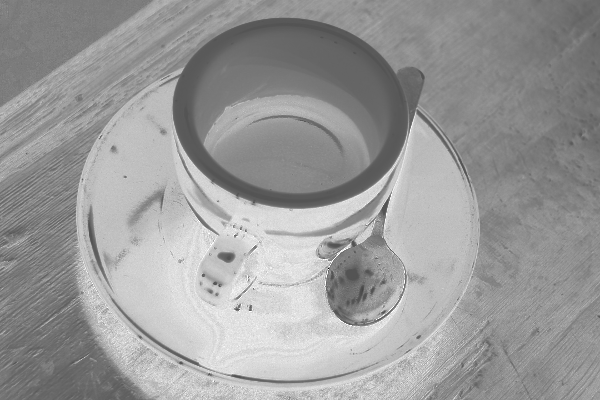
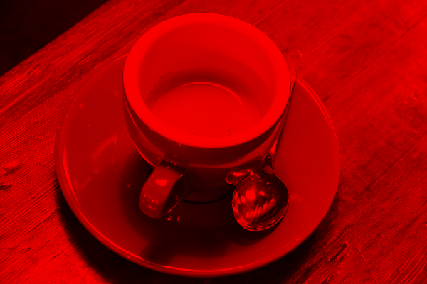
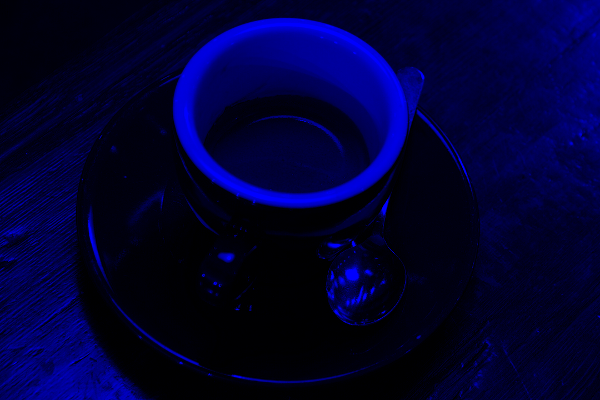
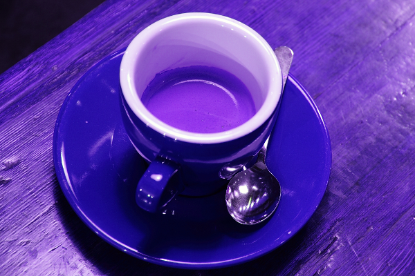
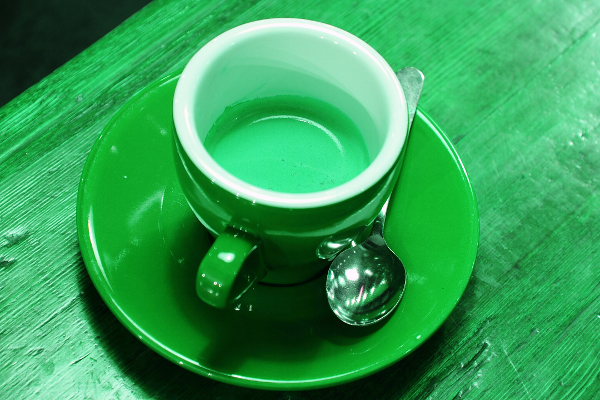

RGB Images and Color Statistics
MAGE can receive red, green, blue, and RGB as four distinct inputs. The three planes are ordinary SImage2D intensity images. RGB is an SImage3D{H,W,3,IntensityPixel{N0f8}}, with R, G, and B stored in slices 1, 2, and 3 of the last axis.
Two opt-in bundles preserve the output-type boundary:
| Bundle | Specialization (output) | Callable input | Output |
|---|---|---|---|
bundle_image2DIntensity_color_statistics_rgb_factory | a 2D intensity image type | same-size RGB image | same-size 2D intensity map |
bundle_image3DIntensity_rgb_factory | an RGB image type | zero, one, or two same-size RGB inputs; optionally one numeric parameter or same-size 2D binary mask | same-size RGB image |
The first is available from get_extension_color_statistics_rgb_intensityimg; the second from get_extension_rgbimg. Neither is inserted into the historical 2D image getters.
Leading RGB functions
The RGB bundle is the basic bundle of a new output library, so its first two entries follow the same convention as the numeric, list, and 2D image basic bundles:
identity_rgb(rgb)is first and passes an existing RGB value through.return_rgb()is second and constructs a same-sized RGB image filled with typed ones without requiring an RGB input.
return_rgb is parameter-free in MAGE terms. Like every bundled function, it still accepts and ignores trailing framework args.... The order is asserted by tests so later insertions cannot silently break the convention.
Constructing the RGB input
using MAGE
include(joinpath(dirname(pathof(MAGE)), "..", "docs", "gallery_timing.jl"))
using ImageCore: N0f8
red = [1.0 0.0; 0.5 0.0]
green = [0.0 1.0; 0.5 0.0]
blue = [0.0 0.0; 0.5 1.0]
rgb = SImageND(IntensityPixel{N0f8}.(cat(red, green, blue; dims = 3)))
output_template = SImageND(IntensityPixel{N0f8}.(zeros(2, 2)))
rgb_bundle = bundle_image3DIntensity_rgb_factory
identity_fn = g_timed(rgb_bundle[:identity_rgb].fn(typeof(rgb)))
return_fn = g_timed(rgb_bundle[:return_rgb].fn(typeof(rgb)))
constant_rgb = return_fn()
luminance = g_timed(bundle_image2DIntensity_color_statistics_rgb_factory[:rgb_luminance].fn(typeof(output_template),
))(rgb)
(identity_fn(rgb) === rgb, size(constant_rgb), all(isone, reinterpret(constant_rgb.img)), size(luminance))(true, (2, 2, 3), true, (2, 2))All seven color functions have one MAGE argument and no numeric parameters:
| Function | Map |
|---|---|
rgb_luminance(rgb) | 0.2126R + 0.7152G + 0.0722B |
red_green_opponency(rgb) | 0.5 + 0.5(R-G); gray is neutral 0.5 |
blue_yellow_opponency(rgb) | 0.5 + 0.5(B-(R+G)/2); gray is neutral 0.5 |
rgb_saturation(rgb) | max(R,G,B)-min(R,G,B) |
normalized_red(rgb) | R/(R+G+B); black maps to 0 |
normalized_green(rgb) | G/(R+G+B); black maps to 0 |
normalized_blue(rgb) | B/(R+G+B); black maps to 0 |
The opponent maps use a midpoint because an unsigned intensity chromosome cannot otherwise preserve the sign of a color difference. Every result is in [0,1], has the specialized 2D output type, and retains the RGB input's height and width.
RGB arithmetic
The RGB-output bundle provides five two-argument, parameter-free arithmetic operators. All work independently at every pixel and color channel and return the exact specialized H×W×3 RGB type.
| Function | Result |
|---|---|
add_img3D(a, b) | clamp(a + b, 0, 1) |
subtract_img3D(a, b) | clamp(a - b, 0, 1) |
mult_img3D(a, b) | a * b |
max_img3D(a, b) | channelwise maximum |
min_img3D(a, b) | channelwise minimum |
For example, this combines the RGB input above with a uniform RGB image and shows the first output triplet from each operation:
other_rgb = SImageND(IntensityPixel{N0f8}.(fill(0.25, 2, 2, 3)))
rgb_bundle = bundle_image3DIntensity_rgb_factory
function first_triplet(name)
fn = g_timed(rgb_bundle[name].fn(typeof(rgb)))
# The factory defines a specialized method during this example block.
result = Base.invokelatest(fn, rgb, other_rgb)
values = Float64.(reinterpret(result.img))
return values[1, 1, :]
end
[(name, first_triplet(name)) for name in
(:add_img3D, :subtract_img3D, :mult_img3D, :max_img3D, :min_img3D)]5-element Vector{Tuple{Symbol, Vector{Float64}}}:
(:add_img3D, [1.0, 0.25098039215686274, 0.25098039215686274])
(:subtract_img3D, [0.7490196078431373, 0.0, 0.0])
(:mult_img3D, [0.25098039215686274, 0.0, 0.0])
(:max_img3D, [1.0, 0.25098039215686274, 0.25098039215686274])
(:min_img3D, [0.25098039215686274, 0.0, 0.0])Unary RGB transforms
These one-argument, parameter-free functions also preserve the specialized RGB type:
| Function | Result |
|---|---|
invert_rgb(rgb) | replaces each channel x with 1-x |
grayscale_rgb(rgb) | replicates Rec. 709 luminance into R, G, and B |
keep_red_rgb(rgb) | retains red; sets green and blue to zero |
keep_green_rgb(rgb) | retains green; sets red and blue to zero |
keep_blue_rgb(rgb) | retains blue; sets red and green to zero |
rotate_channels_left_rgb(rgb) | maps (R,G,B) to (G,B,R) |
rotate_channels_right_rgb(rgb) | maps (R,G,B) to (B,R,G) |
Parameterized RGB adjustments
Each adjustment has two MAGE arguments—the RGB image and one Real value—and returns RGB. Inputs outside the documented range are clamped. NaN and infinite parameters select the identity behavior, except brightness where they select an offset of zero, which is also identity.
| Function | Parameter | Meaning |
|---|---|---|
adjust_brightness_rgb(rgb, amount) | amount ∈ [-1,1] | adds amount to every channel; 0 is identity |
adjust_contrast_rgb(rgb, factor) | factor ∈ [0,4] | scales distance from 0.5; 1 is identity |
adjust_saturation_rgb(rgb, factor) | factor ∈ [0,4] | scales distance from luminance; 0 is grayscale and 1 is identity |
adjust_gamma_rgb(rgb, gamma) | gamma ∈ [0.1,5] | computes channel^gamma; 1 is identity |
Coffee example: inputs and outputs
The input below is the coffee.png image distributed by JuliaImages/TestImages.jl.

rgb_luminancergb_saturationred_green_opponencyblue_yellow_opponency
normalized_rednormalized_greennormalized_blueUnary RGB input/output examples
invert_rgbgrayscale_rgb
keep_red_rgbkeep_green_rgb
keep_blue_rgb
rotate_channels_left_rgb
rotate_channels_right_rgbBrightness parameters
amount = -0.3amount = 0amount = 0.3Contrast parameters
factor = 0.5
factor = 1factor = 2Saturation parameters

factor = 0
factor = 1factor = 2Gamma parameters
gamma = 0.5
gamma = 1gamma = 2Masking RGB with a binary image
mult_image3D(rgb, binary_mask) is the RGB counterpart of the existing 2D mult_image2D operation. It has two MAGE arguments. A white mask pixel retains the complete RGB triplet; a black pixel produces black in all three channels. An all-black mask returns a valid, all-black RGB image of the specialized type, never nothing.
mult_image3D(rgb, luminance ≥ 0.5)MAGE.image3D_color_statistics_rgb — Module
Color statistics and opponent channels for typed RGB image inputs.
Bundles
The exhaustive, always-current list of operators in the bundle is on the Bundle Catalogue page.
MAGE.image3D_color_statistics_rgb.bundle_image2DIntensity_color_statistics_rgb_factory — Constant
bundle_image2DIntensity_color_statistics_rgb_factoryColor-derived intensity maps for an RGB input stored as SImage3D{height,width,3,IntensityPixel{T}}. The three slices on the last axis are red, green, and blue respectively. Every operator has one effective MAGE argument and returns the concrete same-size 2D intensity type used to specialize the factory.
The bundle contains rgb_luminance, red_green_opponency, blue_yellow_opponency, rgb_saturation, normalized_red, normalized_green, and normalized_blue. It is opt-in through get_extension_color_statistics_rgb_intensityimg; existing image library getters do not include it implicitly.
MAGE.image3D_color_statistics_rgb.rgb_luminance_image2D_factory — Function
rgb_luminance_image2D_factory(::Type{I})Specialize rgb_luminance(rgb) for the 2D intensity output type I. The input must be a same-height, same-width, three-channel SImage3D; the output uses Rec. 709 weights 0.2126R + 0.7152G + 0.0722B and has exactly the dimensions and pixel category of I.
MAGE.image3D_color_statistics_rgb.red_green_opponency_image2D_factory — Function
red_green_opponency_image2D_factory(::Type{I})Specialize red_green_opponency(rgb) for output type I. It encodes signed red-minus-green opponency as 0.5 + 0.5(R-G), so 0.5 is neutral, red tends to 1, and green tends to 0.
MAGE.image3D_color_statistics_rgb.blue_yellow_opponency_image2D_factory — Function
blue_yellow_opponency_image2D_factory(::Type{I})Specialize blue_yellow_opponency(rgb) for output type I. It encodes blue against the additive-yellow axis (R+G)/2, with 0.5 representing neutrality.
MAGE.image3D_color_statistics_rgb.rgb_saturation_image2D_factory — Function
rgb_saturation_image2D_factory(::Type{I})Specialize rgb_saturation(rgb) for output type I. The map is HSV-style chroma max(R,G,B) - min(R,G,B), in [0,1].
MAGE.image3D_color_statistics_rgb.normalized_red_image2D_factory — Function
normalized_red_image2D_factory(::Type{I})Specialize normalized_red(rgb) for output type I. Each non-black pixel is R/(R+G+B); black maps to zero.
MAGE.image3D_color_statistics_rgb.normalized_green_image2D_factory — Function
normalized_green_image2D_factory(::Type{I})Specialize normalized_green(rgb) for output type I. Each non-black pixel is G/(R+G+B); black maps to zero.
MAGE.image3D_color_statistics_rgb.normalized_blue_image2D_factory — Function
normalized_blue_image2D_factory(::Type{I})Specialize normalized_blue(rgb) for output type I. Each non-black pixel is B/(R+G+B); black maps to zero.
MAGE.image3D_rgb — Module
Shape-preserving arithmetic and masking for typed RGB images.
Bundles
MAGE.image3D_rgb.bundle_image3DIntensity_rgb_factory — Constant
bundle_image3DIntensity_rgb_factoryRGB-output arithmetic and masking operators. Specialize the bundle with a concrete SImage3D{height,width,3,IntensityPixel{T}} output type.
Following the basic-library convention, the first two entries are identity_rgb and the parameter-free constant constructor return_rgb. The remaining entries provide pairwise channel arithmetic, unary color transforms, bounded brightness/contrast/saturation/gamma adjustments, and masking by a same-height, same-width 2D BinaryPixel image. Every operator returns the exact specialized RGB type.
This bundle is opt-in through get_extension_rgbimg.
MAGE.image3D_rgb.identity_rgb_image3D_factory — Function
identity_rgb_image3D_factory(::Type{I})Specialize identity_rgb(rgb) -> I. This is the first entry of the RGB basic bundle by convention and returns its RGB input unchanged. Trailing framework args... are accepted and ignored.
MAGE.image3D_rgb.return_rgb_image3D_factory — Function
return_rgb_image3D_factory(::Type{I})Specialize the parameter-free constructor return_rgb() -> I. It returns an RGB image filled with typed ones at the exact specialized dimensions. This is the second entry of the RGB basic bundle, after identity_rgb, matching the established basic-bundle convention. Framework-supplied args... are accepted and ignored, so the function remains callable from ordinary MAGE nodes.
MAGE.image3D_rgb.add_image3D_factory — Function
add_image3D_factory(::Type{I})Specialize add_img3D(rgb1, rgb2) -> I. The two RGB images must have the exact specialized type and their channels are added elementwise, with saturation at one. Trailing framework args... are accepted and ignored.
MAGE.image3D_rgb.subtract_image3D_factory — Function
subtract_image3D_factory(::Type{I})Specialize subtract_img3D(rgb1, rgb2) -> I. The second RGB image is subtracted channelwise from the first and negative results are clamped to zero. Trailing framework args... are accepted and ignored.
MAGE.image3D_rgb.mult_rgb_image3D_factory — Function
mult_rgb_image3D_factory(::Type{I})Specialize mult_img3D(rgb1, rgb2) -> I. Corresponding RGB channels are multiplied elementwise. This differs from mult_image3D, whose second input is a 2D binary mask. Trailing framework args... are accepted and ignored.
MAGE.image3D_rgb.max_image3D_factory — Function
max_image3D_factory(::Type{I})Specialize max_img3D(rgb1, rgb2) -> I, selecting the larger value at every pixel and channel. Trailing framework args... are accepted and ignored.
MAGE.image3D_rgb.min_image3D_factory — Function
min_image3D_factory(::Type{I})Specialize min_img3D(rgb1, rgb2) -> I, selecting the smaller value at every pixel and channel. Trailing framework args... are accepted and ignored.
MAGE.image3D_rgb.invert_rgb_image3D_factory — Function
Specialize invert_rgb(rgb) -> I, replacing every channel value x with 1-x.
MAGE.image3D_rgb.grayscale_rgb_image3D_factory — Function
Specialize grayscale_rgb(rgb) -> I, replicating Rec. 709 luminance into all three channels.
MAGE.image3D_rgb.keep_red_rgb_image3D_factory — Function
Specialize keep_red_rgb(rgb) -> I, retaining red and setting green and blue to zero.
MAGE.image3D_rgb.keep_green_rgb_image3D_factory — Function
Specialize keep_green_rgb(rgb) -> I, retaining green and setting red and blue to zero.
MAGE.image3D_rgb.keep_blue_rgb_image3D_factory — Function
Specialize keep_blue_rgb(rgb) -> I, retaining blue and setting red and green to zero.
MAGE.image3D_rgb.rotate_channels_left_rgb_image3D_factory — Function
Specialize rotate_channels_left_rgb(rgb) -> I, mapping (R,G,B) to (G,B,R).
MAGE.image3D_rgb.rotate_channels_right_rgb_image3D_factory — Function
Specialize rotate_channels_right_rgb(rgb) -> I, mapping (R,G,B) to (B,R,G).
MAGE.image3D_rgb.adjust_brightness_rgb_image3D_factory — Function
adjust_brightness_rgb_image3D_factory(::Type{I})Specialize adjust_brightness_rgb(rgb, amount) -> I. Finite amount is clamped to [-1,1] and added to every channel; non-finite values mean zero.
MAGE.image3D_rgb.adjust_contrast_rgb_image3D_factory — Function
adjust_contrast_rgb_image3D_factory(::Type{I})Specialize adjust_contrast_rgb(rgb, factor) -> I around midpoint 0.5. Finite factor is clamped to [0,4]; non-finite values mean identity (1).
MAGE.image3D_rgb.adjust_saturation_rgb_image3D_factory — Function
adjust_saturation_rgb_image3D_factory(::Type{I})Specialize adjust_saturation_rgb(rgb, factor) -> I around Rec. 709 luminance. Finite factor is clamped to [0,4]; 0 is grayscale, 1 is identity, and non-finite values also mean identity.
MAGE.image3D_rgb.adjust_gamma_rgb_image3D_factory — Function
adjust_gamma_rgb_image3D_factory(::Type{I})Specialize adjust_gamma_rgb(rgb, gamma) -> I, computing channel^gamma. Finite gamma is clamped to [0.1,5]; non-finite values mean identity (1).
MAGE.image3D_rgb.mult_image3D_factory — Function
mult_image3D_factory(::Type{I})Specialize mult_image3D(rgb, binary_mask) -> I for the concrete RGB output type I. The input RGB image must have exactly the specialized dimensions and three channels; binary_mask must be a same-size 2D BinaryPixel image.
White mask pixels retain all three input channels and black mask pixels set all three channels to zero. Consequently, an all-black mask returns an all-black RGB image—not nothing—with the exact specialized size and pixel category. Trailing framework args... are accepted and ignored.
Timings for the examples
Measured during this documentation build. See Timing methodology for measurement limits and input cases that can make operators expensive.
rgb types
Julia 1.13.2; znver4; 1 Julia thread(s); optimisation level 2.
Times are warmed wall-clock measurements of the actual calls above, including invokelatest and allocations. Loading, factory generation and image rendering are excluded. CPU load and garbage collection affect these values. The maximum is the slowest observed sample, not a worst-case bound.
| Input | Dimensions | Pixel storage |
|---|---|---|
| image #1 | 2×2×3 | IntensityPixel{FixedPointNumbers.N0f8} |
| image #2 | 2×2×3 | IntensityPixel{FixedPointNumbers.N0f8} |
Numeric-only plot calls of the same operator and arity are grouped: argument ranges cover the sampled values, the median is the median of the per-case medians, and the maximum covers every observed sample. Image calls keep a row for each input/parameter combination.
| Operator | Inputs | Output | Median (µs) | Observed max (µs) | Allocated bytes (median) | Cases / samples |
|---|---|---|---|---|---|---|
return_rgb | 2×2×3, IntensityPixel{FixedPointNumbers.N0f8} | 0.07 | 7.85 | 112 | 1 / 3 | |
rgb_luminance_image3D | image #1 | 2×2, IntensityPixel{FixedPointNumbers.N0f8} | 0.37 | 7.37 | 304 | 1 / 3 |
identity_rgb | image #1 | 2×2×3, IntensityPixel{FixedPointNumbers.N0f8} | 0.21 | 6.54 | 0 | 1 / 3 |
add_img3D | image #1; image #2 | 2×2×3, IntensityPixel{FixedPointNumbers.N0f8} | 0.59 | 14.3 | 176 | 1 / 3 |
subtract_img3D | image #1; image #2 | 2×2×3, IntensityPixel{FixedPointNumbers.N0f8} | 0.57 | 15.63 | 176 | 1 / 3 |
mult_img3D | image #1; image #2 | 2×2×3, IntensityPixel{FixedPointNumbers.N0f8} | 13.47 | 13.98 | 176 | 1 / 3 |
max_img3D | image #1; image #2 | 2×2×3, IntensityPixel{FixedPointNumbers.N0f8} | 1.21 | 17.07 | 176 | 1 / 3 |
min_img3D | image #1; image #2 | 2×2×3, IntensityPixel{FixedPointNumbers.N0f8} | 0.53 | 12.6 | 176 | 1 / 3 |
rgb gallery
Julia 1.13.2; znver4; 1 Julia thread(s); optimisation level 2.
Times are warmed wall-clock measurements of the actual calls above, including invokelatest and allocations. Loading, factory generation and image rendering are excluded. CPU load and garbage collection affect these values. The maximum is the slowest observed sample, not a worst-case bound.
| Input | Dimensions | Pixel storage |
|---|---|---|
| image #1 | 400×600×3 | IntensityPixel{FixedPointNumbers.N0f8} |
| image #2 | 400×600 | BinaryPixel{Bool} |
Numeric-only plot calls of the same operator and arity are grouped: argument ranges cover the sampled values, the median is the median of the per-case medians, and the maximum covers every observed sample. Image calls keep a row for each input/parameter combination.
| Operator | Inputs | Output | Median (µs) | Observed max (µs) | Allocated bytes (median) | Cases / samples |
|---|---|---|---|---|---|---|
rgb_luminance_image3D | image #1 | 400×600, IntensityPixel{FixedPointNumbers.N0f8} | 391.1 | 23219.44 | 2880280 | 1 / 3 |
red_green_opponency_image3D | image #1 | 400×600, IntensityPixel{FixedPointNumbers.N0f8} | 937.26 | 1156.25 | 2880280 | 1 / 3 |
blue_yellow_opponency_image3D | image #1 | 400×600, IntensityPixel{FixedPointNumbers.N0f8} | 1200.08 | 1234.57 | 2880280 | 1 / 3 |
rgb_saturation_image3D | image #1 | 400×600, IntensityPixel{FixedPointNumbers.N0f8} | 439.55 | 465.59 | 2880280 | 1 / 3 |
normalized_red_image3D | image #1 | 400×600, IntensityPixel{FixedPointNumbers.N0f8} | 336.1 | 348.77 | 2880280 | 1 / 3 |
normalized_green_image3D | image #1 | 400×600, IntensityPixel{FixedPointNumbers.N0f8} | 242989.84 | 242989.84 | 2880280 | 1 / 1 |
normalized_blue_image3D | image #1 | 400×600, IntensityPixel{FixedPointNumbers.N0f8} | 350.31 | 367.98 | 2880280 | 1 / 3 |
invert_rgb | image #1 | 400×600×3, IntensityPixel{FixedPointNumbers.N0f8} | 995.41 | 1023.99 | 720104 | 1 / 3 |
grayscale_rgb | image #1 | 400×600×3, IntensityPixel{FixedPointNumbers.N0f8} | 614.15 | 615.14 | 720104 | 1 / 3 |
keep_red_rgb | image #1 | 400×600×3, IntensityPixel{FixedPointNumbers.N0f8} | 535.0 | 583.67 | 720104 | 1 / 3 |
keep_green_rgb | image #1 | 400×600×3, IntensityPixel{FixedPointNumbers.N0f8} | 715.1 | 730.23 | 720104 | 1 / 3 |
keep_blue_rgb | image #1 | 400×600×3, IntensityPixel{FixedPointNumbers.N0f8} | 676.57 | 716.46 | 720104 | 1 / 3 |
rotate_channels_left_rgb | image #1 | 400×600×3, IntensityPixel{FixedPointNumbers.N0f8} | 1100.27 | 1114.83 | 720104 | 1 / 3 |
rotate_channels_right_rgb | image #1 | 400×600×3, IntensityPixel{FixedPointNumbers.N0f8} | 1095.08 | 1127.16 | 720104 | 1 / 3 |
adjust_brightness_rgb | image #1; -0.3 | 400×600×3, IntensityPixel{FixedPointNumbers.N0f8} | 1026.31 | 1046.12 | 720168 | 1 / 3 |
adjust_brightness_rgb | image #1; 0.0 | 400×600×3, IntensityPixel{FixedPointNumbers.N0f8} | 1034.6 | 1037.65 | 720168 | 1 / 3 |
adjust_brightness_rgb | image #1; 0.3 | 400×600×3, IntensityPixel{FixedPointNumbers.N0f8} | 1023.94 | 1027.67 | 720168 | 1 / 3 |
adjust_contrast_rgb | image #1; 0.5 | 400×600×3, IntensityPixel{FixedPointNumbers.N0f8} | 1255.25 | 1274.63 | 720168 | 1 / 3 |
adjust_contrast_rgb | image #1; 1.0 | 400×600×3, IntensityPixel{FixedPointNumbers.N0f8} | 1247.0 | 1252.15 | 720168 | 1 / 3 |
adjust_contrast_rgb | image #1; 2.0 | 400×600×3, IntensityPixel{FixedPointNumbers.N0f8} | 1246.96 | 1261.55 | 720168 | 1 / 3 |
adjust_saturation_rgb | image #1; 0.0 | 400×600×3, IntensityPixel{FixedPointNumbers.N0f8} | 1590.67 | 1620.84 | 720168 | 1 / 3 |
adjust_saturation_rgb | image #1; 1.0 | 400×600×3, IntensityPixel{FixedPointNumbers.N0f8} | 1561.35 | 1566.36 | 720168 | 1 / 3 |
adjust_saturation_rgb | image #1; 2.0 | 400×600×3, IntensityPixel{FixedPointNumbers.N0f8} | 1561.18 | 1568.02 | 720168 | 1 / 3 |
adjust_gamma_rgb | image #1; 0.5 | 400×600×3, IntensityPixel{FixedPointNumbers.N0f8} | 232.69 | 266.89 | 720168 | 1 / 3 |
adjust_gamma_rgb | image #1; 1.0 | 400×600×3, IntensityPixel{FixedPointNumbers.N0f8} | 226.02 | 227.81 | 720168 | 1 / 3 |
adjust_gamma_rgb | image #1; 2.0 | 400×600×3, IntensityPixel{FixedPointNumbers.N0f8} | 228.15 | 229.0 | 720168 | 1 / 3 |
mult_image3D | image #1; image #2 | 400×600×3, IntensityPixel{FixedPointNumbers.N0f8} | 53.75 | 79.54 | 720168 | 1 / 3 |